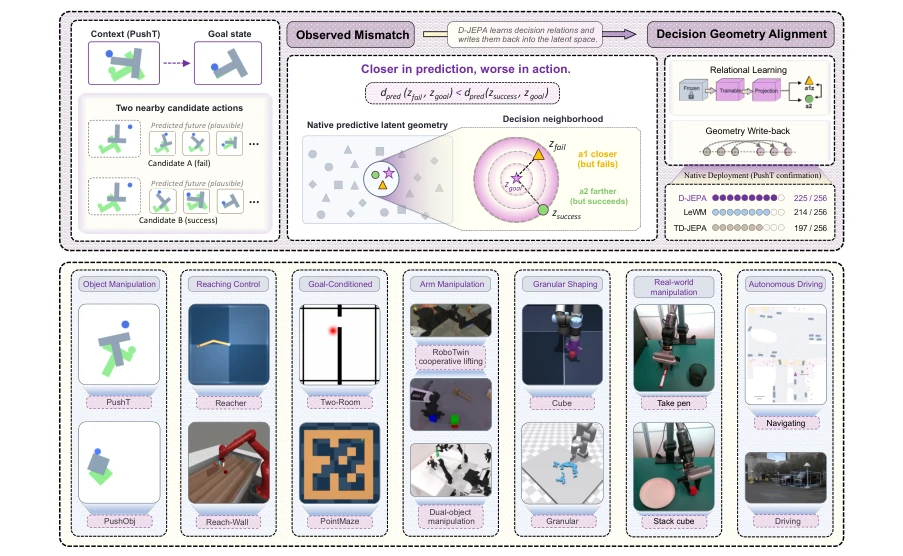
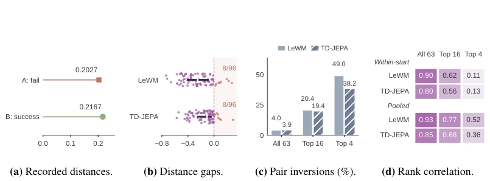
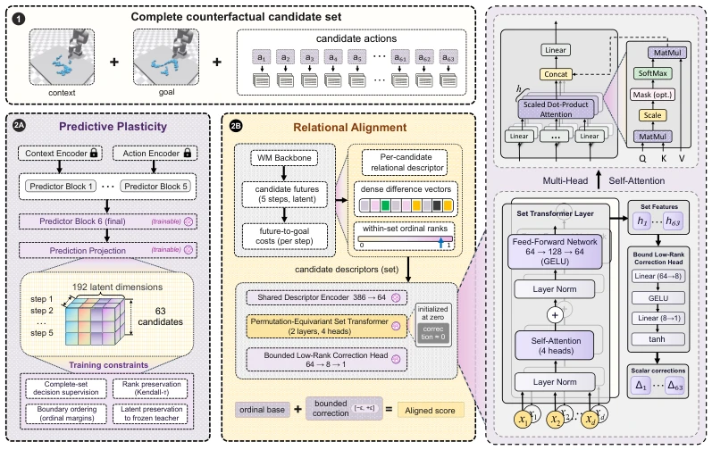
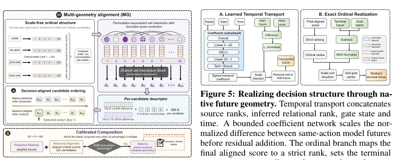
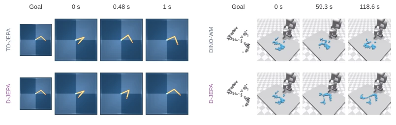
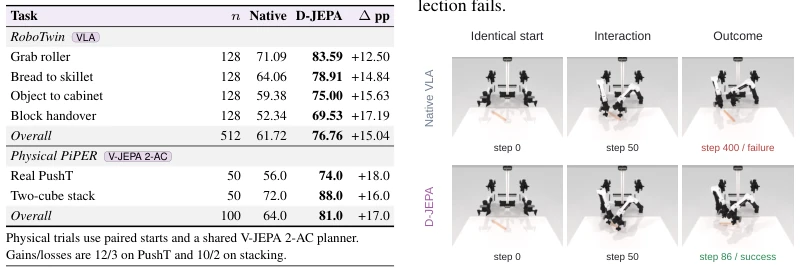
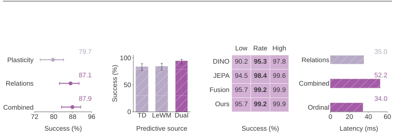
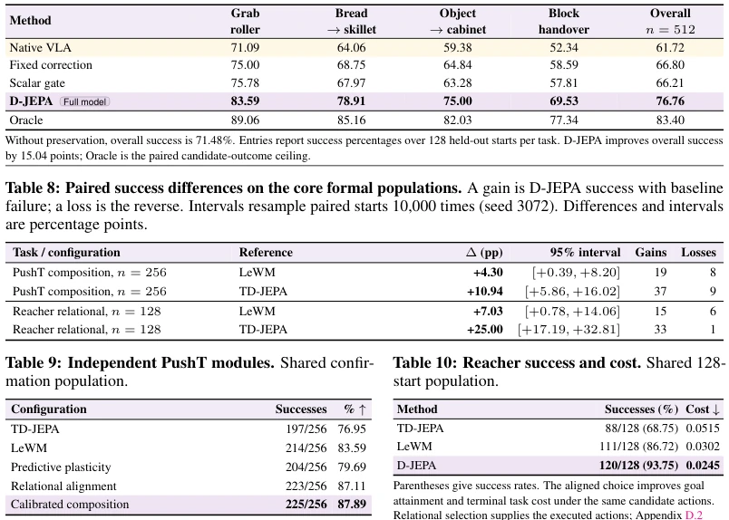
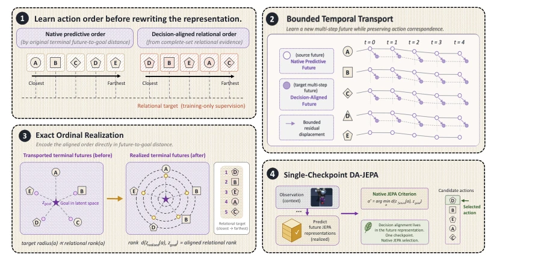
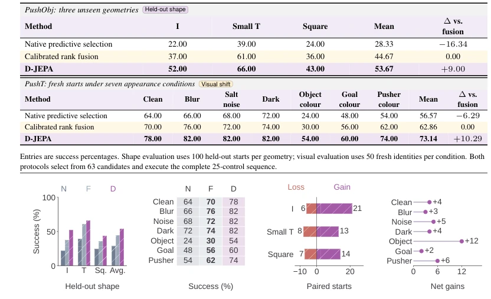

This paper applies a "decision alignment" patch to the JEPA family; the core insight is sharp: accurate prediction does not imply correct selection, candidates close to the goal in latent space may fail directly. D-JEPA attempts to force "execution results" back into latent geometry using a set of complex relational operators; although it pulled success rate from 76% to 87% on PushT, inference latency rose from 35ms to 52ms, does this count as sacrificing real-time performance for accuracy? Moreover, it relies on a large candidate set (63), resulting in significant computational overhead during actual deployment. However, unifying different geometries (LeWM, TD-JEPA) under an ordinal interface is indeed clever design, effectively adding a "navigation correction" to latent planning. But essentially it still relies on large amounts of trial-and-error data to learn relationships; generalization to unseen action spaces remains challenging, and it is sensitive to candidate pool size.
Existing JEPA-like models (e.g., LeWM, Maes et al., 2026; TD-JEPA, Bai & Xiong, 2026) rely on predicted latent distances to guide planning. However, the authors found a "decision local prediction gap": among the few candidates competing for execution, candidates predicted to be closer to the goal may actually fail. Figure 2 data shows that on PushT, LeWM's prediction-execution correlation within the top-4 candidates plummeted from 0.90 to 0.11. This means that while global prediction geometry is good, it fails at decision boundaries. Relying solely on prediction distance cannot guarantee correct action selection; it is urgent to introduce execution results to supervise relative relationships between candidate sets, otherwise latent planning is like "blind men touching an elephant".

Figure 1: From predictive proximity to decision-aligned control. A candidate closer to the goal in predictive latent space can fail while a farther alternative succeeds. D-JEPA learns relations among futures and realizes decision structure in future representations. The PushT confirmation summarizes action-selection performance; the lower strip situates the framework across manipulation, reaching, goal-conditioned control and driving.

Figure 2: Predicted distance preferences can conflict with executed outcomes. (a) Predicted goal RMS distance favors failing A over successful B in a recorded LeWM pair. (b) Per-start normalized distance gaps between the closest successful and failing candidates; positive values favor failure. Points show all 96 audit starts per model; bars mark medians and interquartile intervals. (c) Mean success–failure pair inversion rates within mixed-outcome shortlists; top-four means use 34 LeWM and 29 TD-JEPA starts. (d) Predicted–realized latent-cost correlations on the same audit. The illustrative pair in (a) belongs to a separate confirmation start. Definitions and all denominators appear in Appendix C.1.
The D-JEPA framework is divided into three stages. First, the Relational Alignment module receives the candidate set, extracts goal-relative descriptors and ordinal ranks, learns decision relationships between candidates via a permutation-equivariant Set Transformer, and outputs bounded correction to modify original scores. This module uses a zero-initialized rank-eight correction head to ensure updates are bounded. Second, Predictive Plasticity allows limited fine-tuning of the predictor tail (only the last block), providing complementary evidence. The two are fused via Calibrated Composition, based on threshold selection. Finally, Representation Lifting writes the learned structure "back" to future latent: Temporal Transport corrects trajectories, Exact Ordinal Realization maps rank to geometric radius of terminal future, enabling native latent-distance planning to directly recover aligned action selection. The whole process maintains candidate identity unchanged, compatible with multi-geometry input, and integrates evidence from different prediction geometries like LeWM, TD-JEPA via a shared ordinal interface. Training objectives include success mass and boundary ordering to ensure clear local decision boundaries; the Loss function also includes squared-correction weights to prevent over-correction.

Figure 3: Learning decision-relevant relations over candidate futures. Candidates share a context and goal. Predictive plasticity adapts the predictor tail and projection; relational alignment combines goal-relative descriptors and ordinal evidence through a permutation-equivariant set operator and a bounded correction. Both paths retain candidate identities. The diagram shows the 63-candidate configuration; Figure 4 continues with multi-geometry evidence and calibrated composition.

Figure 4: Combining geometries and proposals. Scale-free ordinal evidence feeds the relational oper- ator; calibrated composition admits a reliable plastic proposal over the relational default. Candidate identi- ties remain unchanged.

Figure 6: Decision alignment across distinct physical dynamics. Matched initial states, goals and execution horizons reveal the physical consequences of different selections. D-JEPA reaches the Reacher target and redistributes the Granular particles toward the prescribed goal. Granular panels share a timeline, with the completed rollout’s terminal state held through the remaining timestamps.
Tested on control tasks such as PushT, Reacher, Granular, and RoboTwin, physical PiPER robots. Baselines include LeWM, TD-JEPA, and Var-JEPA, etc. Metrics are success rate and PDMS. D-JEPA reached 87.89% on PushT, RoboTwin average improvement of 15.04 points, physical tasks improved by 17 points. Ablation shows Relational Alignment contributed the most (+10.16%). Robust under shape and visual changes (Figure 9). But Table 6 shows inference latency increased, and relies on a large candidate pool (63), limiting immediate application on low-compute ends. Additionally, PDMS improvement was significant in Driving tasks, proving cross-domain effectiveness.

Figure 8: Aligned driving trajectories. D-JEPA maintains greater clearance. Shared logged camera observations appear above simulated candidate execu- tions at matched scales and times.

Figure 10: Relational alignment benefits from complementary predictive evidence. (a) Component con- firmation; Combined denotes calibrated composition. (b) Predictive-source ablation. (c) Lower limit, success and upper limit across geometries. These panels use Wilson 95% intervals. (d) Median end-to-end latency. Components, sources and geometries follow the evaluations in Tables 9 and 5.

Figure 2 combines executed-outcome diagnostics with predicted–realized latent-cost correlations. For each audit start and model, let ds and df be the minimum predicted goal RMS distances among successful and failing deployable candidates. The normalized gap is (ds −df)/(ds + df); a positive value means that the lowest-distance failing candidate outranks every successful alternative. All 96 audit starts contain both outcomes, and each model has eight positive-gap starts. Panel (b) includes every start, with median and interquartile summaries. The separate recorded illustration uses the same LeWM model, start and candidate pool for both actions: candidate A has distance 0.2027 and fails, whereas candidate B has distance 0.2167 and succeeds.

Figure 12: From aligned action preferences to realized future geometry. Bounded temporal transport refines future trajectories with matched candidate and time correspondence. Exact ordinal realization places terminal futures at goal-relative radii specified by the final strict ranks. Native goal distance then recovers the aligned choice. The panels illustrate the complementary mechanisms formalized in Equations 3 and 4; Table 6 verifies the ordinal interface numerically.
其他图片Other Figures

Figure 9: Decision alignment under geometric and visual change. (a) Grouped success bars and (b) a condition-by-method success matrix compare native selection (N), calibrated fusion (F) and D-JEPA (D). (c) Diverging bars separate gains from losses; (d) lollipops show their net difference relative to fusion. Each displayed group has positive net gain.